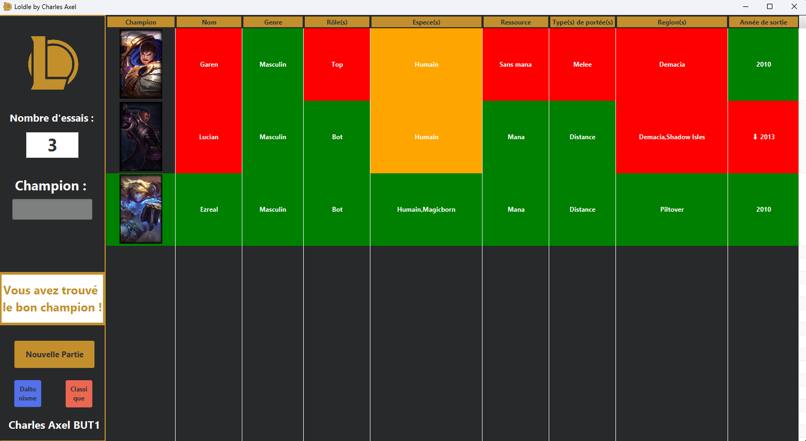
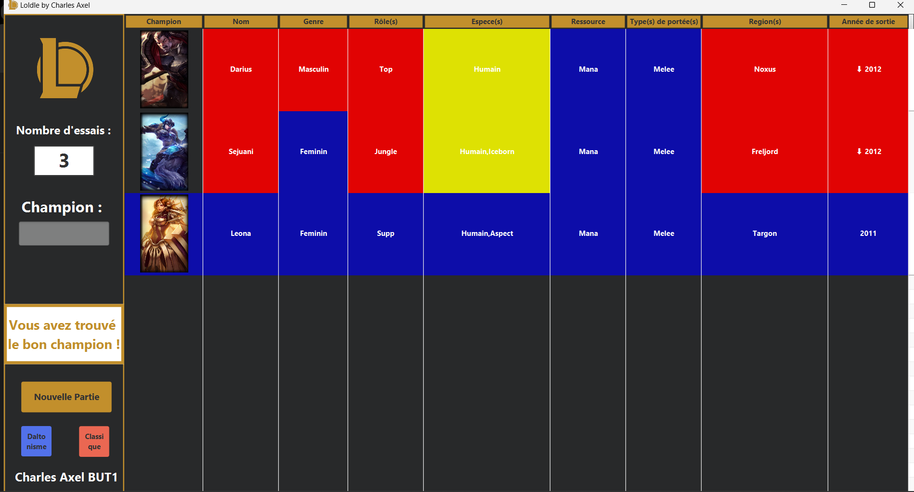

En équipe : ❌
🕙 : 60 h
Ce projet est un jeu inspiré de "Wordle", mais avec des personnages issus de l'univers de League of Legends. Le but est de deviner un champion de League of Legends à partir d'indices qui changent à chaque tour. Le projet est réalisé en Java avec l'utilisation de JavaFX pour l'interface graphique et Derby JDBC pour la gestion de la base de données.
| Technologie |
|---|
| Java |
| JavaFX |
| Derby JDBC |
| Fonctionnalités |
|---|
| Interface utilisateur interactive avec des éléments dynamiques. |
| Gestion d'une base de données pour stocker les champions et les scores. |
| Logique de jeu avec des indices progressifs pour chaque tentative. |
| Mode daltonien qui modifie certaines couleurs. |
Photos :

